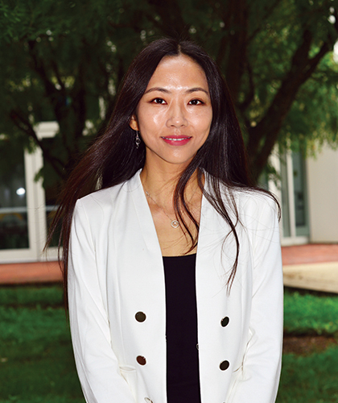

Organizers
Nare Karapetyan
Postdoctoral Associate, UMD

Miao Yu
Professor, UMD
Pratap Tokekar
Associate Professor, UMD
Workshop
As with agriculture, the integration of automation and robotic systems is becoming increasingly important in aquaculture to provide more sustainable and efficient production. However, unlike agriculture, the marine domain presents unique challenges for robotics in aquaculture such as distorted visibility, color loss, environmental forces, and traversability constraints. These challenges have opened up a new dimension of research in robotics for aquaculture. Due to the growing interest in using robotics and automation in aquaculture, several specific research grants and programs have been established to tackle these challenges. However, research in this domain is still limited and requires significant investment from both academia and industry. Sustainable aquaculture has the potential to have a significant environmental and economic impact. Robots that can efficiently monitor natural habitats, biodiversity, and enhance safe harvesting practices are key to this vision.
The main questions we want to address in this workshop are: where is the state of the art and what are the main challenges. The workshop aims to bring together researchers from both academia and industry to discuss these issues, not only from robotics but also from the aquaculture perspective. By opening up the conversation between industry practitioners and researchers, we hope to highlight the fundamental issues that arise in the design and deployment of robotics systems for aquaculture. This workshop aims to facilitate a deeper understanding of the challenges and opportunities presented by the integration of robotics in aquaculture and to foster collaboration between researchers and industry practitioners to advance the field.
University of Pennsylvania (UPenn)
University of South Carolina (UofSC)
Monterey Bay Aquarium Research Institute (MBARI)
TBA
TBA
TBA
In-person Venue: Detroit, MI, USA
Remote Participation Link: Zoom link
| Time | Event |
|---|---|
| 8:30 | Opening Remarks |
| 8:40 | Invited Talk - TBA (TBA) |
| 9:20 | Invited Talk - TBA (TBA) |
| 10:00 | Coffee break + poster session |
| 11:00 | Invited Talk - TBA (TBA) |
| 11:40 | Invited Talk - Dr. Giancarlo Troni (MBARI) |
| 12:20 | Lunch Break |
| 13:30 | Invited Talk - Dr. Ioannis Rekleitis (UofSC) |
| 14:10 | Selected Contributed presentation |
| 14:50 | Coffee break + poster session |
| 15:50 | Invited Talk - M. Ani Hsieh (UPenn) |
| 16:30 | Panel Discussion + closing remarks |
Postdoctoral Associate, UMD
Professor, UMD
Associate Professor, UMD